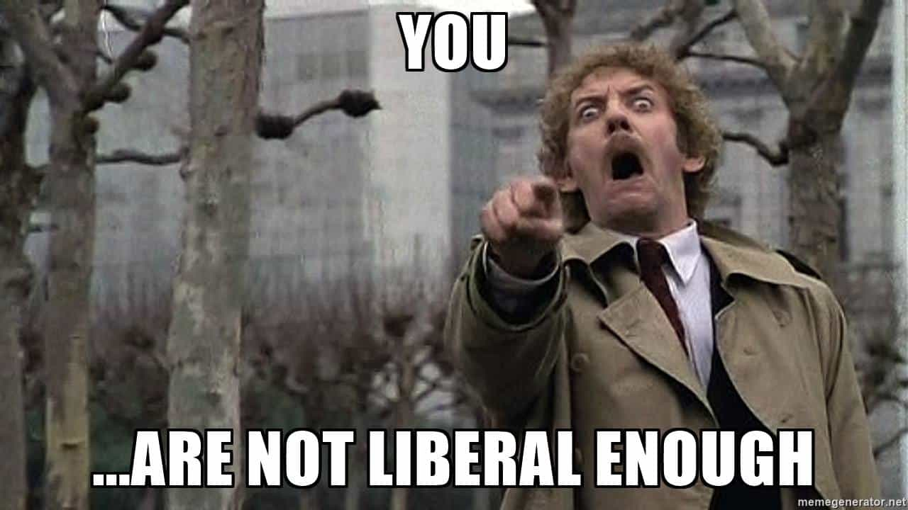
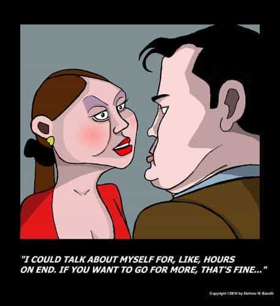

"You know, walk the earth, meet people... get into adventures."


The American Presidential election looms ever closer, with the liberal candidate Hillary Clinton seeming to still win the (rigged?) polls despite ever increasing scandals. I want to use today’s space to examine some of the apparent inconsistencies of the left, the underlying motivations of their views, and how those views are fundamentally incompatible with the ideas of us here at Return Of Kings.
Modern liberalism, or leftism if you prefer, possesses several contradictions that make it seem logically impossible to hold all their ideas at one time in your head without suffering from an extreme case of cognitive dissonance. Whether it be simultaneously embracing the gay rights movement and feminism while having sympathy for fundamentalist Muslims, or how you can be for gun control to save all the toddlers who were lucky enough to survive your pro-abortion policies, any liberal platform point is so weak that any rational person sees his point made and won with no effect at all; the lefty simple rattles on to their next talking point without having the good sense to know that they lost.
How can someone have an unreasonable political philosophy that is self-defeating and irrational and still hold their head up as a person of sense? They can’t, and the reason that they appear to do so is because we are mistaking modern day liberalism as a movement of rational thought and philosophy.
It’s not. It’s a religion. More accurately, it’s a cult. Here are four hallmark behaviors of the liberal that are cult-like.

Rational thought is what sets humanity apart from the beast; we are born significantly premature to allow our oversized brains out of the womb. Using tools and critically perceiving our surroundings and making rational decisions is what allowed us to dominate larger animals and survive and flourish over thousands of years.
Liberals don’t think; thinking leads to examination of yourself and the world, and if you don’t like what you see, you will feel bad about yourself, and liberals don’t like feeling bad. While the rational way to deal with feeling bad would be to improve yourself and feel good about your successes, liberals would rather feel good by ignoring their situation, which is one reason why marijuana use is so popular with the left.
This is why many liberal arguments make no sense. Liberals agree that one should not feed wild animals in a park lest they become dependent on artificial aid, yet they have no issue giving money and food to bums in person, nor do they have any issue with even the most exorbitant welfare programs.
It is about FEELING. A liberal feels good when he gives money to a homeless person, even though that money might keep the homeless person in complacency instead of finding the will to better themselves. Writ large, the liberal feels good about their taxes supporting welfare programs and really good about your taxes being used for welfare programs as well.
Liberals are pro-illegal immigration, even though illegals commit much crime, because it feels good to help disadvantaged brown people, and it assuages their institutionalized white guilt. Liberals are pro-gun control, because it feels good to make guns the villains and make criminals victims as well. Liberals are pro-abortion because women that don’t have kids are in better physical shape than women who have had them, and it feels good to be hot, and you don’t have to feel bad when an abortion happens as the kid was not a person yet.

Liberalism, being of a religious value, excuses everything. Running for President of the USA on a pro-woman ticket yet your husband is a rapist and you covered up for him? Not a problem, you two are liberals, and you’re excused since that makes you a good person.
How can Hillary Clinton attack Trump for the birther thing when she started it when campaigning against Obama? How can she criticize Trump’s comments to women when her husband’s acts against women are far worse and far more numerous? How can she consider Trump too reckless to have control over the nation’s nuclear weapons when she drops classified info about them on national television?
She’s a liberal and she is excused from all evil; he is not.
This sort of “for me, but not for thee” thinking is the bedrock of a cult. Everyone who lives in the USA as a citizen is supposed to be considered your fellow man; one nation under God. Hillary, with her infamous deplorables comment as a prime example, has shown that she is possibly the very first American Presidential candidate that hates a large segment of the populace of the country. Even Barack Obama values me for my tax revenue.
Compare this with the viciousness with which a liberal will turn on another liberal when they are not liberal enough. Any Bernie Sanders supporter will be able to attest to this. Truly, the only sin you can commit while liberal is not towing the party line hard enough. This is straight from any hard-core religion or cult’s manual on keeping the believers faithful.

Once you look beyond the hypocrisy of their standards, you can see the hypocrisy of their stances. Wouldn’t it seem a little illogical to be pro-abortion, which murders little kids, but be pro-gun control, in order to protect these little kids? The only time the Democrats won’t use children in their campaign platforms is when they’re talking about abortion rights.
Liberals are pro-abortion because it gives them power and privilege to end their casual sex “oopsies” at any time they want. They’re pro-gun control because they don’t own guns, and if the only people who do are their obedient agents of the State’s power, then there won’t be any crime and the deplorables won’t be able to fight back against their statist programs. It doesn’t have anything to do with children at all; it’s all about what benefits them, and only them.

Liberals fear independent thought, and so they hate the middle class. Rich people have so much money, and probably more than a little guilt to exploit, that they can be co-opted into the liberal cult easily and used for their money.
Everyone else, however, needs to be poor enough to be dependent on the liberal machine. The liberal view is that people need to be powerless, because, even if they are miserable, prosperity and happiness will be assured because the state will tell you that you are so and you will not be allowed to disagree.
You can’t reason with a fanatic. The greatest debates are had when there is either no proof, or there is, but one or more sides will simply not listen. We can extol conservative or libertarian values all day long and point out how they are backed up by reality, but, if they are blinded, they will not see.
If Trump wins, do not gloat to these people, for their machine will take a long time to dismantle, and even a headless snake is dangerous. If Clinton wins, do not lament around them either, for you merely mark yourself as a target.
The best thing to do is to get people of the left out of your life the best you can. Friendships can be stopped, and acquaintances through social activities can be distilled down to only interactions of that activity, though you should really ask yourself if a hobby that is shared with liberals is really worth keeping. Same thing with churches, although it is hard to find a church that is still traditional and not yet corrupted by feminism and liberalism.
Work will be a difficult one. We have covered being in a “man’s field” before, and that helps to a degree. Beyond that, simply not speaking with leftist coworkers other than necessary conversations for business should be your goal, and this will go double if you have one for a boss.
We’re in a transitory stage between reasonable and friendly disagreement and open physical violence being the norm. Open sabotage and various legal and illegal acts used by the left against their ideological foes is the order of the day.
We must be hard targets against the hate of the left, as there is nothing that a liberal hates more than a successful, middle-class, white, Christian, straight man. Do not allow them access to any vulnerabilities, but do not draw attention to yourself either. Great forces are at play during these current times, much can be accomplished by simply stepping out of the way at the right time.
Read More: The Ideology That Can Soundly Defeat Liberalism Is Patriarchal Nationalism